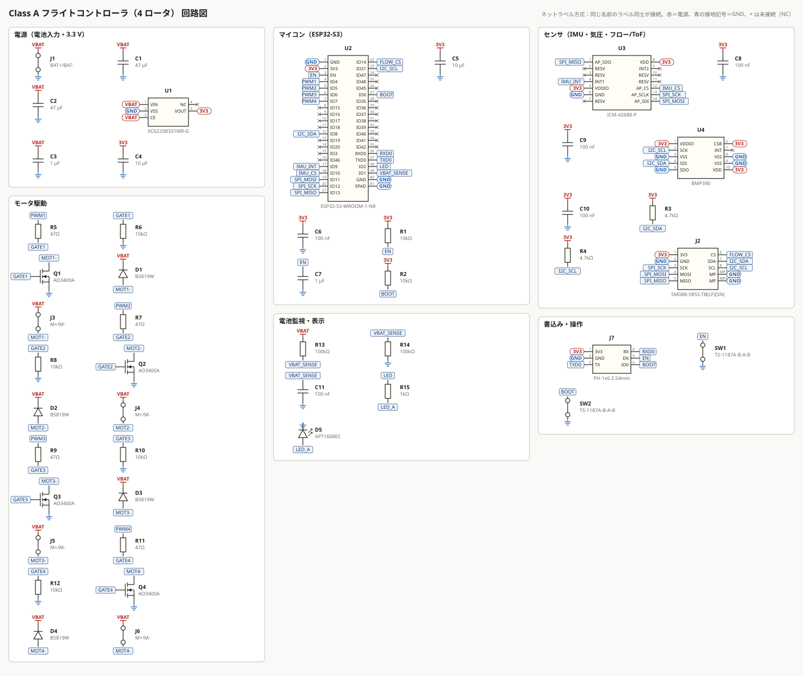
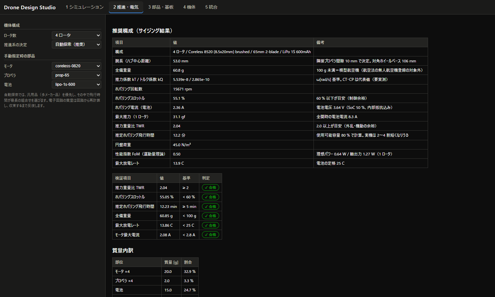

4 / 4
ゴール合格数
✔ 合格
段階判定
ゴール判定
| ID | ゴール | 合格基準 | 結果 | 判定 |
|---|---|---|---|---|
| G2-1 | 推力余裕 | TWR ≥ 2.0 かつ ホバリングスロットル ≤ 60 % | TWR 2.04、スロットル 55.1 % | ✔ 合格 |
| G2-2 | 飛行時間 | ホバリング飛行時間 ≥ 5 分 | 12.2 分 | ✔ 合格 |
| G2-3 | 電気的検証 | 全 22 項目に合格 | 22 / 22 合格 | ✔ 合格 |
| G2-4 | ネットリスト健全性 | 1 ピンだけのネット 0、電源ピンの未接続 0 | 1 ピンネット 0、電源未接続 0 | ✔ 合格 |
設計の流れ
- カタログ（モータ 6 種 × プロペラ × 電池）の適合する全 46 組合せを、モータの電気モデルと電池の電圧降下を連立させて評価した。
- TWR・ホバリングスロットル・飛行時間・100 g 未満・放電レート・モータ電流の条件を満たす組合せから、汎用品（多メーカー品）を優先し、その中で飛行時間が最長のものを選んだ。
- 選んだ構成から回路を自動生成し、BOM と基板面積から電子回路の質量を求めた。その質量で再度サイジングし、構成と質量が変わらなくなるまで反復した。
- 回路の各部（MOSFET、ゲート抵抗、還流ダイオード、LDO、分圧器、I²C、配線幅）を計算で検証した。
推奨構成（サイジング結果）
| 項目 | 値 | 備考 |
|---|---|---|
| 構成 | 4 ロータ / Coreless 8520 (8.5x20mm) brushed / 65mm 2-blade / LiPo 1S 600mAh | |
| 腕長（ハブ中心距離） | 53.0 mm | 隣接プロペラ間隙 10 mm で決定。対角ホイールベース 106 mm |
| 全備重量 | 60.8 g | 100 g 未満＝模型航空機（航空法の無人航空機登録の対象外） |
| 推力係数 kT / トルク係数 kQ | 5.539e-8 / 2.865e-10 | ω[rad/s] 基準。CT・CP は代表値（要実測） |
| ホバリング回転数 | 15671 rpm | |
| ホバリングスロットル | 55.1 % | 60 % 以下が目安（制御余裕） |
| ホバリング電流（電池） | 2.36 A | 電池電圧 3.64 V（SoC 50 %、内部抵抗込み） |
| 最大推力（1 ロータ） | 31.1 gf | 全開時の電池電流 8.3 A |
| 推力重量比 TWR | 2.04 | 2.0 以上が目安（外乱・機動の余裕） |
| 推定ホバリング飛行時間 | 12.2 分 | 使用可能容量 80 % で計算。実機は 2〜4 割短くなりうる |
| 円盤荷重 | 45.0 N/m² | |
| 性能指数 FoM（運動量理論） | 0.50 | 理想パワー 0.64 W / 軸出力 1.27 W（1 ロータ） |
| 最大放電レート | 13.9 C | 電池の定格 25 C |
| 検証項目 | 値 | 基準 | 判定 |
|---|---|---|---|
| 推力重量比 TWR | 2.04 | ≥ 2 | ✔ 合格 |
| ホバリングスロットル | 55.05 % | < 60 % | ✔ 合格 |
| 推定ホバリング飛行時間 | 12.23 min | ≥ 5 min | ✔ 合格 |
| 全備重量 | 60.85 g | < 100 g | ✔ 合格 |
| 最大放電レート | 13.86 C | < 25 C | ✔ 合格 |
| モータ最大電流 | 2.08 A | < 2.8 A | ✔ 合格 |
質量内訳
| 部位 | 質量 [g] | 割合 |
|---|---|---|
| モータ ×4 | 20.0 | 32.9 % |
| プロペラ ×4 | 2.0 | 3.3 % |
| 電池 | 15.0 | 24.7 % |
| 電子回路（基板＋部品） | 6.8 | 11.2 % |
| フレーム | 12.0 | 19.7 % |
| フロー＋ToF モジュール | 2.0 | 3.3 % |
| 配線・ねじ等 | 3.0 | 4.9 % |
| 合計 | 60.8 | 100 % |
推進系の特性
組合せ探索（上位）
| モータ | プロペラ | 電池 | 全備重量 [g] | TWR | ホバ. スロットル | 飛行時間 [分] | 入手性 | 判定 | 不合格理由 |
|---|---|---|---|---|---|---|---|---|---|
| coreless-1020 | prop-75 | lipo-1s-1000 | 80.2 | 2.16 | 52 % | 15.3 | 限定 | ✔ 合格 | |
| coreless-0820 | prop-75 | lipo-1s-800 | 67.7 | 2.02 | 53 % | 13.6 | 限定 | ✔ 合格 | |
| coreless-1020 | prop-65 | lipo-1s-800 | 73.3 | 2.00 | 58 % | 13.5 | 限定 | ✔ 合格 | |
| coreless-1020 | prop-75 | lipo-1s-800 | 75.7 | 2.19 | 51 % | 13.3 | 限定 | ✔ 合格 | |
| coreless-0820 | prop-65 | lipo-1s-600 | 60.8 | 2.04 | 55 % | 12.2 | 汎用 | ✔ 合格 | |
| coreless-0820 | prop-75 | lipo-1s-600 | 63.2 | 2.09 | 50 % | 11.3 | 限定 | ✔ 合格 | |
| coreless-1020 | prop-65 | lipo-1s-600 | 68.8 | 2.06 | 56 % | 11.1 | 限定 | ✔ 合格 | |
| coreless-1020 | prop-75 | lipo-1s-600 | 71.2 | 2.24 | 49 % | 10.9 | 限定 | ✔ 合格 | |
| coreless-0820 | prop-65 | lipo-1s-450 | 57.3 | 2.10 | 53 % | 10.0 | 汎用 | ✔ 合格 | |
| coreless-0820 | prop-75 | lipo-1s-450 | 59.7 | 2.14 | 48 % | 9.3 | 限定 | ✔ 合格 | |
| coreless-1020 | prop-65 | lipo-1s-450 | 65.3 | 2.10 | 55 % | 8.9 | 限定 | ✔ 合格 | |
| coreless-1020 | prop-75 | lipo-1s-450 | 67.7 | 2.26 | 47 % | 8.8 | 限定 | ✔ 合格 | |
| bl-2204-2300 | prop-5045 | lipo-3s-1300 | 259.8 | 6.48 | 33 % | 21.9 | 汎用 | ✖ 不合格 | 全備重量 |
| coreless-0820 | prop-65 | lipo-1s-1000 | 69.8 | 1.89 | 60 % | 16.5 | 汎用 | ✖ 不合格 | 推力重量比 TWR |
| coreless-1020 | prop-65 | lipo-1s-1000 | 77.8 | 1.96 | 60 % | 15.5 | 限定 | ✖ 不合格 | 推力重量比 TWR、ホバリングスロットル |
質量の収束反復（試行の繰り返し）
| 反復 | 電子回路質量（入力）[g] | 選択された構成 | 全備重量 [g] | TWR | 飛行時間 [分] |
|---|---|---|---|---|---|
| 0 | 8.00 | coreless-0820 / prop-65 / lipo-1s-600 | 62.0 | 2.00 | 11.9 |
| 1 | 6.84 | coreless-0820 / prop-65 / lipo-1s-600 | 60.8 | 2.04 | 12.2 |
回路図
ファイル: out/stage2/schematic.svg、ネットリスト: out/stage2/netlist.net（KiCad 形式）、netlist.json

電気計算と検証
| 分類 | 検証項目 | 式・条件 | 値 | 基準 | 判定 | 備考 |
|---|---|---|---|---|---|---|
| モータ駆動 MOSFET | 電流余裕 Id / Imax | 5.7 A / 2.08 A | 2.74 倍 | ≥ 2 倍 | ✔ 合格 | |
| モータ駆動 MOSFET | 耐圧余裕 Vds / Vbat,max | 30 V / 4.2 V | 7.14 倍 | ≥ 2 倍 | ✔ 合格 | |
| モータ駆動 MOSFET | ゲート駆動 Vgs − Vgs(th)max | 3.3 − 1.45 | 1.85 V | ≥ 1 V | ✔ 合格 | Rds(on) は 2.5 V と 4.5 V の規格値から 3.3 V を線形補間 |
| モータ駆動 MOSFET | 温度上昇（全開時） | (I²·Rds + ½·V·I·2tsw·f)·θja = (0.173 + 0.015) W × 150 °C/W | 28.19 °C | < 50 °C | ✔ 合格 | ドレイン側に放熱銅箔＋サーマルビアを設ける前提の θja |
| ゲート抵抗 | GPIO ピーク電流 V/Rg | 3.3 V / 47 Ω | 70.21 mA | < 80 mA | ✔ 合格 | Qg≈6 nC を数十 ns で充電する過渡電流。平均電流は Qg·f≈0.1 mA と小さい |
| ゲート抵抗 | スイッチング時間 Qg·Rg/V | 6 nC × 47 Ω / 3.3 V | 85.45 ns | < 500 ns | ✔ 合格 | PWM 周期の 1 % 未満 |
| ゲート抵抗 | プルダウン電流 | 3.3 V / 10 kΩ | 0.33 mA | < 1 mA | ✔ 合格 | 起動時に GPIO が浮いてもモータが回らないようにする |
| 還流ダイオード | 平均電流余裕 IF(AV) / ((1−u)·Im) | 1 A / 0.48 A | 2.08 倍 | ≥ 1.5 倍 | ✔ 合格 | ホバリング時の OFF 期間にモータ電流が還流 |
| 還流ダイオード | サージ耐量 IFSM / Imax | 25 A / 2.08 A | 12.02 倍 | ≥ 2 倍 | ✔ 合格 | |
| 還流ダイオード | 逆耐圧 VRRM / Vbat,max | 40 V / 4.2 V | 9.52 倍 | ≥ 2 倍 | ✔ 合格 | |
| 3.3 V LDO | 電流余裕 Iout,max / Iピーク | 1 A / 0.378 A | 2.65 倍 | ≥ 2 倍 | ✔ 合格 | |
| 3.3 V LDO | 温度上昇（平均負荷・満充電） | (4.2 − 3.3) V × 0.138 A × 180 °C/W | 22.36 °C | < 50 °C | ✔ 合格 | |
| 3.3 V LDO | 電池終止電圧でのマイコン電源 | min(3.3, 3.30 − 0.22) | 3.08 V | ≥ 3 V | ✔ 合格 | ドロップアウトは規格値から負荷電流に比例として推定。ブラウンアウト防止に 47 µF×2 のバルクを電池入力に置く |
| 3.3 V LDO | 入力電圧余裕 Vin,max(規格) / Vbat,max | 6.0 V / 4.2 V | 1.43 倍 | ≥ 1.2 倍 | ✔ 合格 | |
| 電池電圧監視 | 満充電時 ADC 入力 | 4.2 V × 100k/(100k+100k) | 2.10 V | < 2.9 V | ✔ 合格 | |
| 電池電圧監視 | 分圧器の消費電流 | 4.2 V / 200 kΩ | 21.00 µA | < 50 µA | ✔ 合格 | |
| 電池電圧監視 | RC 時定数（ノイズ除去） | 50 kΩ × 100 nF | 5.00 ms | < 20 ms | ✔ 合格 | 制御周期より十分長く、電圧降下の追従（数十 ms）には十分短い |
| I²C | 立ち上がり時間 0.8473·Rp·Cb | 0.8473 × 4.7 kΩ × 50 pF | 199.12 ns | < 300 ns | ✔ 合格 | Fast-mode（400 kHz）の上限 300 ns |
| 状態 LED | LED 電流 (3.3 − Vf)/R | (3.3 − 2.0) V / 1 kΩ | 1.30 mA | < 20 mA | ✔ 合格 | |
| 電池接続 | 電池接続部の最大電流 | N × Imax = 8.3 A | 8.32 A | < 10 A | ✔ 合格 | 基板は 20 AWG リード直付けパッド。JST PH（2 A 定格）は不可 |
| 配線幅（IPC-2221, 1 oz, ΔT 10 °C） | モータ配線に必要な幅 | I=2.08 A | 0.82 mm | < 2 mm | ✔ 合格 | VBAT は両面ベタ（ポリゴン）で分担し、トレースは最大電流の半分で計算 |
| ネットリスト | 接続先が 1 ピンしかないネット | なし | 0.00 本 | < 1 本 | ✔ 合格 |
推奨配線幅: 信号 0.2 mm、3.3 V 0.3 mm、モータ 0.82 mm、VBAT 2.15 mm（両面ベタで補強）
GPIO 割当て（ファームウェア用）
| 信号 | GPIO | 備考 |
|---|---|---|
| モータ 1 PWM | IO4 | LEDC 20 kHz 推奨（可聴域外） |
| モータ 2 PWM | IO5 | LEDC 20 kHz 推奨（可聴域外） |
| モータ 3 PWM | IO6 | LEDC 20 kHz 推奨（可聴域外） |
| モータ 4 PWM | IO7 | LEDC 20 kHz 推奨（可聴域外） |
| SPI SCK | IO12 | IMU とフローセンサで共用 |
| SPI MOSI | IO11 | |
| SPI MISO | IO13 | |
| IMU CS | IO10 | |
| IMU INT1 | IO9 | データレディ割込み |
| フロー CS | IO14 | |
| I²C SDA | IO8 | 気圧センサ・ToF |
| I²C SCL | IO21 | |
| 電池電圧 | IO1 | ADC1_CH0（Wi-Fi 使用中も読める ADC1 を使用） |
| 状態 LED | IO2 | |
| UART0 TX/RX | IO43 / IO44 | 書込み・ログ |
部品表（BOM）
ファイル: out/stage2/bom.csv。購入先は検索リンク（価格・在庫は各サイトで確認）。
| 参照 | 数量 | 品名 | 型番 | メーカ | パッケージ | 質量 [g] | 代替品 | 購入先（検索） | 要確認 |
|---|---|---|---|---|---|---|---|---|---|
| C1, C2 | 2 | 積層セラミックコンデンサ 47 µF 6.3 V X5R 1206 | GRM31CR60J476ME19L | Murata | C1206 | 0.060 | Samsung Electro-Mechanics CL シリーズ同等品 / TDK C シリーズ同等品 | Digi-Key Mouser LCSC 秋月電子 スイッチサイエンス | |
| C3, C7 | 2 | 積層セラミックコンデンサ 1 µF 10 V X5R 0603 | GRM188R61A105KA61D | Murata | C0603 | 0.010 | Samsung Electro-Mechanics CL シリーズ同等品 / TDK C シリーズ同等品 | Digi-Key Mouser LCSC 秋月電子 スイッチサイエンス | |
| C4, C5 | 2 | 積層セラミックコンデンサ 10 µF 10 V X5R 0805 | GRM21BR61A106KE19L | Murata | C0805 | 0.024 | Samsung Electro-Mechanics CL シリーズ同等品 / TDK C シリーズ同等品 | Digi-Key Mouser LCSC 秋月電子 スイッチサイエンス | |
| C6, C8, C9, C10, C11 | 5 | 積層セラミックコンデンサ 100 nF 16 V X7R 0603 | GRM188R71C104KA01D | Murata | C0603 | 0.025 | Samsung Electro-Mechanics CL シリーズ同等品 / TDK C シリーズ同等品 | Digi-Key Mouser LCSC 秋月電子 スイッチサイエンス | |
| D1, D2, D3, D4 | 4 | ショットキーダイオード 40 V 1 A（モータ還流用） | B5819W | 各社（汎用品） | SOD-123 | 0.040 | 各社 SS14 / onsemi MBR0540 | Digi-Key Mouser LCSC 秋月電子 スイッチサイエンス | |
| D5 | 1 | チップ LED 赤 0603(1608) | APT1608EC | Kingbright | LED0603 | 0.003 | ROHM SML-D12U1W | Digi-Key Mouser LCSC 秋月電子 スイッチサイエンス | |
| H1, H2, H3, H4 | 4 | M2 取付穴 | — | — | MountHole-M2 | 0.000 | |||
| J1 | 1 | 電池リード直付けパッド（2 極、20 AWG 用） | — | — | BatteryPad-2 | 0.000 | J.S.T. Mfg. B2B-PH-K-S | ||
| J2 | 1 | フロー＋ToF モジュール用 JST SH 8 ピン（SMD） | SM08B-SRSS-TB(LF)(SN) | J.S.T. Mfg. | JST-SH-8-SMD | 0.100 | 各社 SH 互換 1.0 mm 8P | Digi-Key Mouser LCSC 秋月電子 スイッチサイエンス | |
| J3, J4, J5, J6 | 4 | モータ配線用スルーホールパッド（2 極） | — | — | MotorPad-2 | 0.000 | |||
| J7 | 1 | 書込み用ピンヘッダ 1×6 2.54 mm（飛行時は未実装可） | PH-1x6 2.54mm | 各社（汎用品） | PinHeader-1x6-2.54 | 0.400 | — ポゴピン治具 | Digi-Key Mouser LCSC 秋月電子 スイッチサイエンス | |
| Q1, Q2, Q3, Q4 | 4 | N-ch MOSFET 30 V 5.7 A（ロジックレベル） | AO3400A | Alpha & Omega Semiconductor | SOT-23 | 0.032 | Vishay SI2302CDS / Diodes Inc. DMG3420U | Digi-Key Mouser LCSC 秋月電子 スイッチサイエンス | |
| R1, R2, R6, R8, R10, R12 | 6 | チップ抵抗 10kΩ 1% 0603(1608) | RC0603FR-0710KL | Yageo | R0603 | 0.012 | Panasonic ERJ-3EKF10KV 相当 / KOA RK73H1JTTD 相当 | Digi-Key Mouser LCSC 秋月電子 スイッチサイエンス | |
| R3, R4 | 2 | チップ抵抗 4.7kΩ 1% 0603(1608) | RC0603FR-074K7L | Yageo | R0603 | 0.004 | Panasonic ERJ-3EKF4K7V 相当 / KOA RK73H1JTTD 相当 | Digi-Key Mouser LCSC 秋月電子 スイッチサイエンス | |
| R5, R7, R9, R11 | 4 | チップ抵抗 47Ω 1% 0603(1608) | RC0603FR-0747RL | Yageo | R0603 | 0.008 | Panasonic ERJ-3EKF47RV 相当 / KOA RK73H1JTTD 相当 | Digi-Key Mouser LCSC 秋月電子 スイッチサイエンス | |
| R13, R14 | 2 | チップ抵抗 100kΩ 1% 0603(1608) | RC0603FR-07100KL | Yageo | R0603 | 0.004 | Panasonic ERJ-3EKF100KV 相当 / KOA RK73H1JTTD 相当 | Digi-Key Mouser LCSC 秋月電子 スイッチサイエンス | |
| R15 | 1 | チップ抵抗 1kΩ 1% 0603(1608) | RC0603FR-071KL | Yageo | R0603 | 0.002 | Panasonic ERJ-3EKF1KV 相当 / KOA RK73H1JTTD 相当 | Digi-Key Mouser LCSC 秋月電子 スイッチサイエンス | |
| SW1, SW2 | 2 | タクトスイッチ 3×4 mm（SMD） | TS-1187A-B-A-B | XKB Connection | Tact-3x4-SMD | 0.100 | Alps Alpine SKRPACE010 | Digi-Key Mouser LCSC 秋月電子 スイッチサイエンス | |
| U1 | 1 | 3.3 V LDO レギュレータ 1 A | XC6220B331MR-G | Torex | SOT-23-5 | 0.015 | Diodes Inc. AP2112K-3.3TRG1 / Microne ME6211C33M5G | Digi-Key Mouser LCSC 秋月電子 スイッチサイエンス | SOT-25 のピン配置（VIN/VSS/CE/NC/VOUT） |
| U2 | 1 | Wi-Fi/BLE マイコンモジュール ESP32-S3（8MB Flash, PSRAM なし） | ESP32-S3-WROOM-1-N8 | Espressif Systems | ESP32-S3-WROOM-1 | 3.000 | Espressif Systems ESP32-S3-MINI-1-N8 / M5Stack M5Stamp S3 / STMicroelectronics STM32F405 + 外付け無線 | Digi-Key Mouser LCSC 秋月電子 スイッチサイエンス | モジュール寸法とパッド位置（1.27 mm ピッチ）、アンテナ禁止領域 |
| U3 | 1 | 6軸 IMU（ジャイロ＋加速度） | ICM-42688-P | TDK InvenSense | LGA-14-2.5x3 | 0.020 | Bosch Sensortec BMI270 / STMicroelectronics LSM6DSO | Digi-Key Mouser LCSC 秋月電子 スイッチサイエンス | ピン番号と RESV ピンの処理、推奨デカップリング容量 |
| U4 | 1 | 気圧センサ | BMP390 | Bosch Sensortec | LGA-10-2x2 | 0.010 | Infineon DPS310 / STMicroelectronics LPS22HB | Digi-Key Mouser LCSC 秋月電子 スイッチサイエンス | ピン配置と通気穴の向き |
Class B（250 級ブラシレス）の構成案
ブラシレス ESC の自作は難度と発火リスクが高いため、Class B は市販モジュールの組合せとする。参考サイジング: 全備重量 416 g、TWR 4.0、ホバリング 11.9 分（Class B 参照機（250級ブラシレス 2204/5045/3S））。
| 区分 | 推奨（汎用・入れ替え可能） | 備考 |
|---|---|---|
| フライトコントローラ | STM32F405 系 FC（30.5 mm 取付） | ArduPilot / Betaflight / INAV が動作。メーカー多数で代替容易 |
| ESC | 4in1 ESC 30 A（AM32 または BLHeli_S ファームウェア） | AM32 はオープンソース（GPL-3.0） |
| コンパニオン | Raspberry Pi Zero 2 W | 経路計画・カメラ処理。姿勢制御は FC が担当（Linux は非リアルタイム） |
| GNSS | u-blox M10 系モジュール | 屋外の位置推定 |
| 受信機 | ExpressLRS 2.4 GHz（技適品を選定） | 手動操縦・フェイルセーフ |
UI

懸念点・今後の課題
- モータ・プロペラの係数と LiPo の内部抵抗は代表値。推力台での実測（推力・電流・回転数）で置き換えるまで、飛行時間とスロットルは ±20〜30 % の誤差を見込む。
- LGA パッケージ（IMU・気圧センサ）のピン配置とモジュールのパッド寸法はデータシートでの最終確認が必要（BOM の「要確認」欄）。
- ESP32-S3 の Wi-Fi 送信ピーク（約 340 mA）とモータ起動電流が重なると、電池電圧が瞬間的に下がる。LDO 出力の実測（オシロスコープ）でブラウンアウトの有無を確認すること。
- ブラシ付きモータは PWM のたびに電気ノイズを出す。IMU の配線とモータ配線を離し、モータ端子にセラミックコンデンサ（0.1 µF）を追加することを検討する。
- 電池リードは 20 AWG 以上とし、コネクタは BT2.0 など大電流品にする。JST PH は定格不足。
- 部品の価格と在庫は取得していない（規約上スクレイピングしない）。Digi-Key・Mouser・Nexar の公式 API キーがあれば自動取得に拡張できる。
参考にした OSS・資料
| 名称 | ライセンス | 利用方法 |
|---|---|---|
| ESP-Drone | GPL-3.0 | ESP32 マイクロ機の回路構成（MOSFET 直駆動）を参考。コード流用なし。派生ファームウェアは GPL |
| Crazyflie firmware / Flow deck | GPL-3.0 | オプティカルフロー＋ToF による屋内位置推定の構成を参考。コード流用なし |
| SKiDL | MIT | コードで回路を記述しネットリストを生成する手法を参考 |
| AM32 ESC firmware | GPL-3.0 | Class B で市販 ESC に書き込むファームウェアとして推奨（本ツールには取り込まない） |
| Betaflight | GPL-3.0 | 角速度ループの D 項フィルタの定石を参考。コード流用なし |
| ArduPilot | GPL-3.0 | フェイルセーフ（低電圧着陸）の定石を参考。コード流用なし |